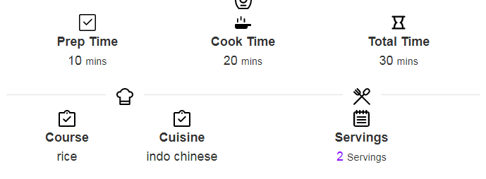

INGREDIENTS
for manchurian sauce:
- oil
- 2 tbsp garlic
- 1 tbsp ginger
- green chilli
- 2 tbsp tomato ketchup
- 2 tbsp chilli sauce
- 1 tbsp soy sauce
- 1 tsp vinegar
- 1 1/2 tbsp salt
- 1 tbsp black pepper
- 3 tbsp corn flour
- 1 cup water
for manchurian:
- 1/2 cup cabbage
- 1/2 cup capsicum
- 1/2 cup spring onion
- 1 tsp ginger
- 1 tsp garlic
- 3 tbsp corn flour
- 2 tbsp maida
- 2 tsp salt
- 2 tsp black pepper
- 1 tsp soy sauce
- 1 tbsp water
- 2 tsp pepper (crushed)
- 0.5 tsp salt
INSTRUCTIONS
- Take all the veggies, finely chopped, in a bowl along with ginger, garlic, corn flour, maida, salt, black pepper and soy sauce.
- Mix them well, adding water as required for consistency
- Make round balls out of the thick vegetable mixture.
- Now deep fry the vegetable balls in a pan.
- Heat some oil in a pan and roast ginger, garlic and green chilli in it for a while
- Add spring onion, tomato ketchup, chilly sauce, soya sauce and vinegar followed by salt and black pepper.
- Mix them well and add a mixture of corn flour plus water to the pan.
- Mix thoroughly and put the fried vegetable balls into the mixture.
- Properly mix the balls along with the sauce.
- Garnish with spring onion and celery. Serve hot along with cooked rice.